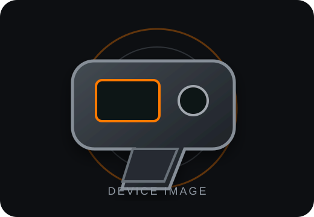

▦
Camera
Scan QR Code
Use this phone or tablet's camera to scan the SecureTrack QR code attached to the Taser.
Ready to verify your device. Tap or scan your device, or enter your device serial number to get started.
Scan the SecureTrack QR code, tap the NFC tag, or enter the device serial number manually.
Use this phone or tablet's camera to scan the SecureTrack QR code attached to the Taser.
Hold your phone near the SecureTrack NFC tag attached to the Taser. The device record will open automatically.
Enter the manufacturer's complete serial number to locate the device.

Confirm this is the equipment you intended to scan before creating an accountability record.
Inspect and verify the condition of this equipment before checkout.
Complete a passing inspection before this equipment can be checked out.
Report damage, malfunction, or another equipment concern.
Assign available equipment to officers currently on duty.